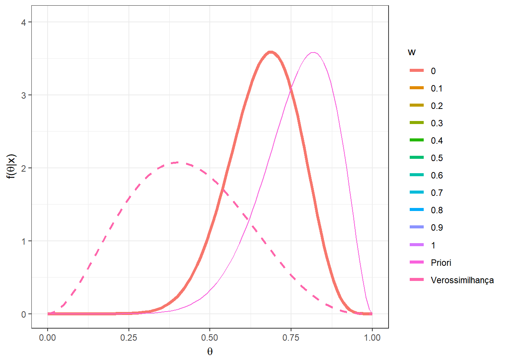
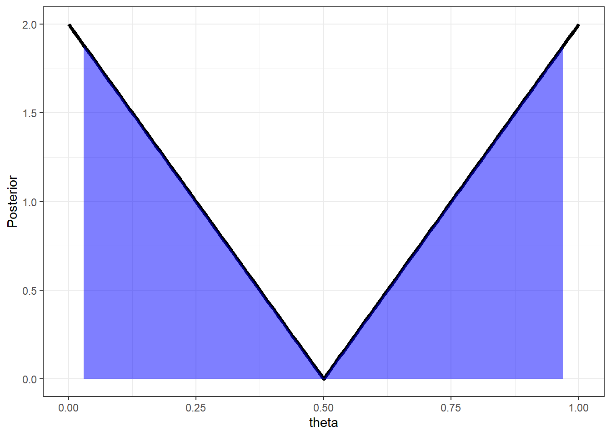

4 Estimação
4.1 Estimação Pontual
Todos os problemas de inferência estatística podem ser vistos como um caso particular de Teoria da Decisão. Um problema de estimação pontual consiste em encontrar um “chute” para o valor do parâmetro \(\theta\), de modo que o espaço de decisões é \(\mathcal{D}=\Theta\). Além disso, nesse tipo de problema é usual considerar funções de perda da forma \(L(d,\theta)=s(\theta)\Delta(d,\theta)\), onde \(\Delta\) é alguma distância (ou uma medida de discrepância) relacionada ao erro por tomar a decisão \(d\) quando o valor do parâmetro é \(\theta\) e \(s\) é uma função não-negativa relacionada à gravidade do erro para cada \(\theta\) (pode ser constante).
\(~\)
Exemplo Considere um problema de estimação pontual, isto é, \(\mathcal{D}=\Theta\), onde a função de perda é dada por \(L(d,\theta)=(d-\theta)^2\), conhecida como perda quadrática.
\(r_x(d)\) \(=\displaystyle \int_\Theta(d-\theta)^2~dP(\theta|x)\) \(=\displaystyle \int_\Theta \left(d^2 - 2d\theta + \theta^2\right) dP(\theta|x)\) \(=d^2\displaystyle\int_\Theta dP(\theta|x) - 2d\int_\Theta\theta ~dP(\theta|x) + \int_\Theta \theta^2 ~dP(\theta|x)\) \(=d^2-2d~E[\theta|x]+E[\theta^2|x]=g(d)\).
\(\dfrac{\partial g(d)}{\partial d}\) \(=2d-2E[\theta|x]=0\) \(\Rightarrow {d}_x^*=E[\theta|x]\).
Logo, um estimador para \(\theta\) contra a perda quadrática é \({\delta}^*(X)=E[\theta|X]\).
\(~\)
\(~\)
Estimador de Bayes para \(\theta\) contra diferentes funções de perda:
Perda Quadrática: \(L_2(d,\theta)=(d-\theta)^2\) \(~\Longrightarrow~\) \({\delta}_2^*(X)=E[\theta|X]\);
Perda Absoluta: \(L_1(d,\theta)=|d-\theta|\) \(\Longrightarrow\) \({\delta}_1^*(X)=Med(\theta|X)\);
Perda 0-1: \(L_0(d,\theta)=c~\mathbb{I}(d\neq\theta)\) \(\Longrightarrow\) \({\delta}_0^*(X)=Moda(\theta|X)\).
\(~\)
\(~\)
Exemplo 1. Voltando à Perda Quadrática: \(L(d,\theta)=a(d-\theta)^2\), \(a>0\).
Já vimos que \(\delta^*(\boldsymbol X)=E[\theta|\boldsymbol X]\). É importante notar que esse estimador só faz sentido se \(E[\theta|\boldsymbol X]\in \mathcal{D}\). Nos casos em que isso não ocorre, tomamos um valor \({d}_x^* \in \mathcal{D}\) próximo a \(E[\theta|\boldsymbol X]\) tal que \(r_x\left({d}_x^*\right)\) é mínimo.
\(~\)
O risco a posteriori para esse estimador é
\(r_x\left(\delta^*(\boldsymbol x)\right)\) \(=r_x\left(E[\theta|\boldsymbol x]\right)\) \(=\displaystyle \int_\Theta L\left(\delta^*(\boldsymbol x),\theta\right)dP(\theta|\boldsymbol x)\) \(=\displaystyle \int_\Theta \left(\theta-E[\theta|\boldsymbol x]\right)^2 dP(\theta|\boldsymbol x)\) \(=Var(\theta|\boldsymbol x)\),
de modo que o risco de Bayes é dado por
\({\rho}^*\left(P\right)\) \(=\rho\left(\delta^*(\boldsymbol X),P\right)\) \(=\displaystyle \int_{\mathfrak{X}} \underbrace{ \int_{\Theta}(\theta-E[\theta|\boldsymbol{x}])^2dP(\theta|\boldsymbol{x})}_{Var[\theta|\boldsymbol{x}]}dP(\boldsymbol{x})\) \(=E\left[Var(\theta|\boldsymbol X)\right]\).
A variância da posteriori \(Var(\theta|\boldsymbol x)\) pode ser vista como uma medida de informação, no sentido que quanto menor essa variância, mais concentrada é a distribuição e há “menos incerteza” sobre \(\theta\). Nesse sentido, espera-se que ao observar \(\boldsymbol X=\boldsymbol x\), a variância \(Var(\theta|\boldsymbol x)\) diminua em relação a variância da priori \(Var(\theta)\).
\[\underbrace{Var(\theta)}_{constante}=\underbrace{E\left[Var(\theta|\boldsymbol X)\right]}_{\boldsymbol \Downarrow}+\underbrace{Var\left[E(\theta|\boldsymbol X)\right]}_{\boldsymbol \Uparrow}\]
Aparentemente, quando espera-se que a variância da posteriori diminua, a variância do estimador deveria aumentar. Muitas vezes isso é colocado como se o objetivo fosse encontrar o estimador de maior variância, em contradição com a abordagem frequentista. Contudo, há outra interpretação desse resultado: deseja-se obter um estimador que varie bastante de acordo com o valor observado de \(\boldsymbol X\), isto é, a informação trazida pela amostra muda sua opinião sobre \(\theta\).
\(~\)
Exemplo 2. Considere \(X_1,...X_n\) c.i.i.d. tais que \(X_i|\theta\sim Poisson(\theta)\) e, a priori, \(\theta \sim Gama(a,b)\).
A função de verossimilhança é \(f(\boldsymbol x | \theta)\propto \prod {\theta}^{x_i}~{e}^{-\theta}\) e a priori é \(~f(\theta)\propto{\theta}^{a-1}~{e}^{-b\theta}\).
Assim, \(f(\theta | \boldsymbol x)\) \(\propto {\theta}^{\sum x_i}~{e}^{-n\theta} ~\cdot~ {\theta}^{a-1}~{e}^{-b\theta}\) \(\propto {\theta}^{a+\sum x_i-1}~{e}^{-(b+n)\theta}\), de modo que \(\theta|\boldsymbol X=\boldsymbol x\sim Gama\left(a+\sum x_i,b+n\right)\).
Como visto anteriormente, o estimador de Bayes contra a perda quadrática é
\(\delta^*(\boldsymbol X)=E[\theta|\boldsymbol X]=\dfrac{a+\sum_iX_i}{b+n}\).
Para calcular o risco de Bayes, note que \(E[X_i|\theta]=\theta\), de modo que \(E[X_i]=E\left[E(X_i|\theta)\right]=E[\theta]=a/b\). Além disso, \(Var(\theta)=\dfrac{a}{b^2}\) e \(Var(\theta|\boldsymbol X)=\dfrac{a+\sum_iX_i}{(b+n)^2}\). Então,
\(\rho^*(P)\) \(=E\left[Var(\theta|\boldsymbol X)\right]\) \(=E\left[\dfrac{a+\sum_iX_i}{(b+n)^2}\right]\) \(= \dfrac{\left(a+\sum E[X_i]\right)}{(b+n)^2}\) \(=\dfrac{\dfrac{a}{b}\left(b+n\right)}{(b+n)^2}\) \(=\dfrac{a}{b(b+n)}\).
Por fim, note que a decisão de Bayes pode ser escrita como uma combinação linear convexa da média da distribuição a priori e do estimador de máxima verossimilhança
\(E[\theta|\boldsymbol X]\) \(=\dfrac{a+\sum_iX_i}{b+n}\) \(=\dfrac{b}{b+n}\left(\dfrac{a}{b}\right)+\dfrac{n}{b+n}\bar{X}\).
\(~\)
Resultado: Seja \(L(d,\theta)=\mathbb{I}(|\theta-d|> \varepsilon)\) \(=1-\mathbb{I}(d-\varepsilon\leq \theta \leq d+\varepsilon)\) , \(\varepsilon > 0\). Então, \(\delta^*(\boldsymbol X)\) é centro do intervalo modal, isto é, o intervalo de tamanho \(2\varepsilon\) de maior densidade a posteriori. Em particular, quando \(\varepsilon \downarrow 0\), temos que \({\delta}^*(\boldsymbol X)=Moda(\theta|\boldsymbol X)\).
Demo: O risco posterior de uma decisão \(d\) é
\(r_{\boldsymbol{x}}(d)\) \(=E\left[L(d,\theta)|\boldsymbol{x}\right]\) \(=E\left[\mathbb{I}(|\theta-d|> \varepsilon)\right]\) \(=E\left[1-\mathbb{I}(d-\varepsilon\leq \theta \leq d+\varepsilon)|\boldsymbol x\right]\) \(=1-P(d-\varepsilon\leq \theta \leq d+\varepsilon|\boldsymbol x)\).
O risco \(r_{\boldsymbol{x}}(d)\) é mínimo quando a probabilidade \(P(d-\varepsilon\leq \theta \leq d+\varepsilon|\boldsymbol x)\) é máxima. Assim, basta tomar o intervalo \(\left[{d}_x^*-\varepsilon ~;~ {d}_x^*+\varepsilon\right]\) com maior probabilidade a posteriori e o estimador de Bayes nesse caso será o valor central desse intervalo, \({d}_x^*\).
\(~\)
Exemplo 3. Considere o exemplo anterior onde \(\theta|\boldsymbol x\sim Gama(a+\sum x_i,b+n)\) e a função de perda do resultado anterior, \(L(d,\theta)=\mathbb{I}(|\theta-d|> \varepsilon)\). Temos que
\(f(\theta|\boldsymbol x)\) \(\propto \theta^{\overbrace{a+\sum x_i-1}^{A_x}}e^{-\overbrace{(b+n)}^{B_x}\theta}\) \(=\theta^{A_x}e^{-{B_x}\theta}\)
theta = seq(0,1.2,0.01)
#Parâmetros da dist a posteriori gama
a1 = 3
b1 = 10
posterior = dgamma(theta, a1, b1 )
# Escolhendo valores de epsilon e calculando a perda mínima associada
e=c(0.5,0.4,0.3,0.25,0.2,0.15,0.1,0.05,0)
loss <- NULL
for(i in 1:length(e)){
loss[i] <- theta[which.min(as.vector(apply(matrix(theta), 1,
function(d) sum(posterior*(abs(theta-d)>e[i])))))]}
# Criando o gráfico
n <- length(e)
tibble(x=rep(loss,each=length(theta)),
e=rep(round(e,2),each=length(theta)),
theta=rep(theta,(n)), post = rep(posterior,n)) %>%
ggplot() +
geom_segment(aes(x=x, xend=x, y=0,yend=dgamma(x, a1, b1 ),colour=as.factor(e))) +
geom_point(aes(x=x, y=0,colour=as.factor(e))) +
geom_segment(aes(x=x-e, xend=x+e, y=0,yend=0,colour=as.factor(e))) +
geom_line(aes(x=theta,y=post, colour="Dist. a posteriori")) +
geom_segment(aes(x=(a1-1)/b1, xend=(a1-1)/b1, y=0,yend=dgamma((a1-1)/b1, a1, b1 ), colour = "Moda a posteriori"),lty=2) +
xlab(expression(theta)) + ylab(expression(paste("f(",theta,"|x)"))) +
theme_bw() + labs(colour = "epsilon") +
gganimate::transition_states(rev(e))
Como comentado no resultado anterior, quando \(\varepsilon \downarrow 0\), temos que \({\delta}^*(\boldsymbol x)=Moda(\theta|\boldsymbol x)\) \(= \displaystyle\sup_{\theta} f(\theta|\boldsymbol x)\).
\(\dfrac{\partial f(\theta|\boldsymbol x)}{\partial \theta}\) \(=(A_x-B_x\theta)\theta^{A_x-1}e^{-B_x\theta}=0\) \(\Leftrightarrow \theta =\dfrac{A_x}{B_x}\)
\({\delta}^*(\boldsymbol X) = Moda(\theta|\boldsymbol X)\) \(=\dfrac{a+\sum X_i-1}{b+n}\) \(=\dfrac{b}{b+n}\left(\dfrac{a-1}{b}\right)+\dfrac{n}{b+n}~\bar{X}\).
\(~\)
Resultado. Seja \(L(d,\theta)=c_1(d-\theta)~\mathbb{I}(d\geq \theta)+c_2(\theta-d)~\mathbb{I}(d<\theta)\) com \(c_1>0\), \(c_2 >0\). Então, \({\delta}^*(\boldsymbol{x})\) é tal que \(P\left(\theta\leq {\delta}^*(\boldsymbol{x})\big|\boldsymbol x\right)=\dfrac{c_1}{c_1+c_2}\). Em particular, se \(c_1=c_2=c\), temos a perda absoluta \(L(d,\theta)=c~|d-\theta|\) e \({\delta}^*(\boldsymbol{X})=Med(\theta|\boldsymbol X)\).
Demo: exercício.
\(~\)
\(~\)
4.2 Estimação por Regiões
Em um problema de estimação por regiões (ou estimação intervalar, no caso univariado), o objetivo é obter um conjunto de valores razoáveis para \(\theta\). Mais formalmente, temos um problema aonde a decisão consiste em escolher um subconjunto do espaço paramétrico, de modo que \(\mathcal{D}=\mathcal{A}\), onde \(\mathcal{A}\) é \(\sigma\)-algebra de subconjuntos de \(\Theta\). Uma estimativa por região é comumente chamada na literatura Bayesiana de região de credibilidade (intervalo de credibilidade, no caso univariado) ou região de probabilidade \(~\gamma=1-\alpha\).
\(~\)
Exemplo 1. Suponha que a distribuição a posteriori é \(f(\theta|\boldsymbol{x})=4\theta~\mathbb{I}_{[0,1/2)}(\theta)+4(1-\theta)~\mathbb{I}_{[1/2,1]}(\theta)\). Uma possível estimativa intervalar é um intervalo central ou um intervalo simétrico em torno da média (ou da moda) com uma probabilidade \(\gamma = 1-\alpha\). Nesse caso, vamos considerar um intervalo central no sentido que deixa de fora conjuntos caudais de probabilidade \(\alpha/2\). Note que é possível obter o intervalo de forma analítica nesse exemplo. A seguir, são apresentadas as funções de distribuição \(F\) e quantílica \(Q\) a posteriori e o intervalo de credibilidade \(\alpha\).
\(F(\theta|\boldsymbol x)\) \(=\displaystyle \int_0^\theta f(t|x)dt\) \(=\displaystyle \int_0^\theta\left[4t~\mathbb I_{[0,1/2]}(t)+(4-4t)~\mathbb I_{(1/2,1]}(t)\right]dt\) \(=\left\{\begin{array}{lcc} 2\theta^2 &,& \theta\leq 1/2\\ -2\theta^2+4\theta-1 &,& \theta>1/2\end{array}\right.\)
\(Q(p)=\left\{\begin{array}{lcc} \sqrt{\dfrac{p}{2}} &,& p\leq 1/2\\ 1-\sqrt{\dfrac{1-p}{2}} &,& p>1/2\end{array}\right.\)
\(I.C.(1-\alpha)=\left[\sqrt{\dfrac{\alpha/2}{2}};1-\sqrt{\dfrac{\alpha/2}{2}}\right]\).
alpha=0.1
theta = seq(0,1,0.01)
# Densidade a posteriori
dpost = Vectorize(function(t){ 4*t*I(t>=0)*I(t<=0.5)+
4*(1-t)*I(t>0.5)*I(t<=1) })
# F. Distribuição a posteriori
ppost = Vectorize(function(t){ 2*(t^2)*I(t>=0)*I(t<=0.5)+
4*(1-t)*I(t>0.5)*I(t<=1)+I(t>1) })
# F. Quantílica a posteriori
qpost = Vectorize(function(t){ ifelse(t<=0.5, sqrt(t/2)*I(t>0),
(1-sqrt((1-t)/2))*I(t<1)+I(t>=1)) })
post = dpost(theta)
l = c(qpost((alpha/2)),qpost((1-alpha/2)))
X = tibble(theta=theta,Posterior=post)
ggplot(data=X,mapping = aes(x=theta,y=Posterior)) +
geom_line(lwd=1.5) +
geom_area(data=subset(X, theta >= l[1] & theta <= l[2]),fill = "blue", alpha=0.5)+
theme_bw()
\(~\)
Exemplo 2. Por fim, suponha que a distribuição a posteriori é \(f(\theta|\boldsymbol{x})=(2-4\theta)~\mathbb{I}_{[0,1/2)}(\theta)+(4\theta-2)~\mathbb{I}_{[1/2,1]}(\theta)\). Vamos construir um intervalo como no Exemplo anterior.
\(F(\theta|\boldsymbol x)\) \(=\left\{\begin{array}{lcc} 2\theta(1-\theta) &,& \theta\leq 1/2\\ 2\theta(\theta-1)+1 &,& \theta>1/2\end{array}\right.\)
\(Q(p)=\left\{\begin{array}{lcc} \dfrac{1}{2}-\dfrac{\sqrt{1-2p}}{2} &,& p\leq 1/2\\ \dfrac{1}{2}+\dfrac{\sqrt{2p-1}}{2} &,& p>1/2\end{array}\right.\)
\(I.C.(1-\alpha)=\left[\dfrac{1}{2}-\dfrac{\sqrt{1-\alpha}}{2};\dfrac{1}{2}+\dfrac{\sqrt{1-\alpha}}{2}\right]\).
alpha=0.1
theta = seq(0,1,0.01)
# Densidade a posteriori
dpost = Vectorize(function(t){ (2-4*t)*I(t>=0)*I(t<=0.5)+
(4*t-2)*I(t>0.5)*I(t<=1) })
# F. Distribuição a posteriori
ppost = Vectorize(function(t){ 2*t*(1-t)*I(t>=0)*I(t<=0.5)+
(2*(t^2)-2*t+1)*I(t>0.5)*I(t<=1)+I(t>1) })
# F. Quantílica a posteriori
qpost = Vectorize(function(t){ ifelse(t<=0.5, (0.5-sqrt(1-2*t)/2)*I(t>0),
(0.5+sqrt(2*t-1)/2)*I(t<1)+I(t>=1)) })
post = dpost(theta)
l = c(qpost((alpha/2)),qpost((1-alpha/2)))
X = tibble(theta=theta,Posterior=post)
ggplot(data=X,mapping = aes(x=theta,y=Posterior)) +
geom_line(lwd=1.5) +
geom_area(data=subset(X, theta >= l[1] & theta <= l[2]),fill = "blue", alpha=0.5)+
theme_bw()
Note que, nesse exemplo, as regiões que tem mais densidade a posteriori foram excluídas do intervalo. Isso não faz muito sentido pois essas regiões têm maior chance de conter o \(\theta\) que quaquer outra região de mesmo tamanho.
\(~\)
\(~\)
Uma função de perda razoável para um problema de estimação por região deve levar em consideração dois fatores:
O tamanho da região \(d \in \mathcal{A}\) (deseja-se uma região que seja menor que o espaço paramétrico);
Pertinência de \(\theta\) na região \(d\).
Assim, considere uma função de perda da forma
\(L(d,\theta)=\lambda(d)-k~\mathbb I_d(\theta)\),
onde \(\lambda(d)\) é o “tamanho” da região \(d\). Por exemplo, a medida de Lebesgue, no caso contínuo, ou a medida de contagem, no caso discreto (no caso geral, considere uma medida que domina a distribuição a posteriori, \(P(\theta|\boldsymbol x) \ll \lambda\)). No caso absolutamente contínuo, o risco a posteriori de uma decisão \(d \in \mathcal{A}\) é
\({r}_{x}(d)\) \(=\displaystyle\int_\Theta \left[\lambda(d)-k~\mathbb I_d(\theta)\right]dP(\theta|\boldsymbol x)\) \(=\displaystyle \int_\Theta\mathbb I_d(\theta)d\theta-\int_\Theta k~\mathbb I_d(\theta)f(\theta|\boldsymbol x)d\theta\) \(=\displaystyle \int_d\left(1-kf(\theta|\boldsymbol x)\right)d\theta\).
Esse risco é mínimo quando \(d=\left\{\theta\in\Theta:1-kf(\theta|\boldsymbol x)\leq 0\right\}\) \(\Leftrightarrow d=\{\theta\in\Theta:f(\theta|\boldsymbol x)\geq 1/k\}\).
Assim, a decisão de Bayes contra essa função de perda consiste em escolher uma região \(d \in \mathcal{A}\) que contêm os pontos do espaço paramétrico com maior densidade a posteriori.
\(~\)
Definição: A região \(R\subseteq \Theta\) é dita ser uma região HPD (Highest Posterior Density) de probabilidade \(\gamma\) se
\(P(\theta\in R|\boldsymbol x)=\gamma\);
\(\forall \theta \in R\) e \(\forall \theta^\prime\notin R\), \(f(\theta|\boldsymbol x)\geq f(\theta^\prime|\boldsymbol x)\).
\(~\)
Voltando ao Exemplo 2. As regiões centrais nesse exemplo tem menor densidade a posteriori. Assim, uma região HPD de probabilidade \(\gamma=1-\alpha\) é dada por
\(I.C.(1-\alpha)=\left[0~;~\dfrac{1}{2}-\dfrac{\sqrt{\alpha}}{2}\right]\bigcup \left[\dfrac{1}{2}+\dfrac{\sqrt{\alpha}}{2}~;~1\right]\)
alpha=0.1
theta = seq(0,1,0.01)
# Densidade a posteriori
dpost = Vectorize(function(t){ (2-4*t)*I(t>=0)*I(t<=0.5)+
(4*t-2)*I(t>0.5)*I(t<=1) })
# F. Distribuição a posteriori
ppost = Vectorize(function(t){ 2*t*(1-t)*I(t>=0)*I(t<=0.5)+
(2*(t^2)-2*t+1)*I(t>0.5)*I(t<=1)+I(t>1) })
# F. Quantílica a posteriori
qpost = Vectorize(function(t){ ifelse(t<=0.5, (0.5-sqrt(1-2*t)/2)*I(t>0),
(0.5+sqrt(2*t-1)/2)*I(t<1)+I(t>=1)) })
post = dpost(theta)
l = c(qpost((1-alpha)/2),qpost((alpha+1)/2))
X = tibble(theta=theta,Posterior=post)
ggplot(data=X,mapping = aes(x=theta,y=Posterior)) +
geom_line(lwd=1.5) +
geom_hline(yintercept=dpost(l[1]), lty=2, col="darkgray") +
geom_area(data=subset(X, theta <= l[1]),fill = "blue", alpha=0.5) +
geom_area(data=subset(X, theta >= l[2]),fill = "blue", alpha=0.5)+
theme_bw()
Note que na solução anterior, o comprimento do intervalo era \(\sqrt{1-\alpha}\), enquanto que o comprimento do HPD é \(1-\sqrt{\alpha}\). Tomando, por exemplo, \(\alpha=0.1\) temos que \(\sqrt{1-\alpha} \approx 0.95\) enquanto \(1-\sqrt{\alpha}\approx 0.68\). Por conter apenas os pontos com maior densidade, o HPD sempre terá comprimento menor ou igual a qualquer intervalo com mesma probabilidade.
\(~\)
Exemplo 3. Considere \(X_1,...,X_n\) c.i.i.d. tais que \(X_i|\theta\sim N(\theta,1/\tau)\) , \(\tau=1/\sigma^2\) , com \(\tau\) conhecido (fixado). Vimos que se, a priori, \(\theta\sim N(m,1/v)\) então \(\theta|\boldsymbol x\sim N\left(\underbrace{\dfrac{vm+n\tau\bar x}{v+n\tau}}_{M_x},\underbrace{\dfrac{1}{v+n\tau}}_{V_x}\right)\) e, assim, \(Z=\dfrac{\theta-M_x}{\sqrt V_x}~\Bigg|~\boldsymbol x\sim N(0,1)\).
O intervalo HPD de probabilidade \(\gamma=1-\alpha=0.95\) é
\(I.C.(1-\alpha)=\) \(\left[M-z_{\alpha/2}\sqrt V;M+z_{\alpha/2}\sqrt V\right]\) \(=\left[\dfrac{vm+n\tau\bar x}{v+n\tau}\pm1.96\sqrt{\dfrac{1}{v+n\tau}}\right]\).
Uma possível forma de representar falta de informação a priori é tomar o limite \(~v\downarrow 0~~\) (\(1/v\uparrow \infty\)). Dessa forma, tem-se
\(\theta|\boldsymbol x\sim N(\bar x,1/(n\tau))\sim N(\bar x,\sigma^2/n)\),
e o intervalo HPD coincide com o I.C. frequentista
\(I.C.(1-\alpha)=\left[\bar x\pm 1.96\dfrac{\sigma}{\sqrt{n}}\right]\).
mx=2; vx=sqrt(3)
alpha=0.05
theta = seq(qnorm(0.001,mx,vx),qnorm(0.999,mx,vx),length.out=100)
post = dnorm(theta,mx,vx)
l = c(qnorm(alpha/2,mx,vx),qnorm(1-alpha/2,mx,vx))
X = tibble(theta=theta,Posterior=post)
ggplot(data=X,mapping = aes(x=theta,y=Posterior)) +
geom_line(lwd=1.5) +
geom_hline(yintercept=dnorm(l[1],mx,vx), lty=2, col="darkgray") +
geom_area(data=subset(X, theta >= l[1] & theta <= l[2]),fill = "blue", alpha=0.5)+
theme_bw()
\(~\)
Exemplo 4: Considere \(X_1,...,X_n\) c.i.i.d. tais que \(X_i|\theta\sim Unif(0,\theta)\). Vimos que se \(\theta\sim Pareto(a,b)\), então \(\theta|\boldsymbol x\sim Pareto (a+n,\max\{x_{(n)},b\})\)
\(f(\theta|\boldsymbol x) =\dfrac{(a+n)[\max\{x_{(n)},b\}]^{a+n}}{\theta^{a+n+1}}~\mathbb I_{[\max\{x_{(n)},b\},\infty)}\)
Note que a função de densidade a posteriori é estritamente decrescente de modo que o extremo inferior da região HPD é \(\max\{x_{(n)},b\}\). A função de distribuição a posteriori é
\(F(\theta|\boldsymbol x)=1-\left(\dfrac{\max\{x_{(n)},b\}}{\theta}\right)^{a+n}\),
de modo que o extremo superior do intervalo pode ser obtido fazendo
\(1-\left(\dfrac{\max\{x_{(n)},b\}}{\theta}\right)^{a+n}=\gamma\) \(\Leftrightarrow\dfrac{\max\{x_{(n)},b\}}{\theta^*}=(1-\gamma)^{1/(a+n)}\) \(\Leftrightarrow \theta^*=\dfrac{\max\{x_{(n)},b\}}{(1-\gamma)^{1/(a+n)}}\).
\(I.C.(1-\alpha)=\left[\max\{x_{(n)},b\},\dfrac{\max\{x_{(n)},b\}}{\alpha^{1/(a+n)}}\right]\)
ax=2; bx=1
maxt=bx/((alpha/3)^(1/ax))
alpha=0.1
limsup=bx/(alpha^(1/ax))
theta = seq(bx,maxt,0.1)
dpareto=Vectorize(function(t){
ax*(bx^ax)*I(t>=bx) / (t^(ax+1)) })
post = dpareto(theta)
X = tibble(theta=theta,Posterior=post)
ggplot(data=X,mapping = aes(x=theta,y=Posterior)) +
geom_line(lwd=1.5) +
xlim(c(0,maxt))+
geom_hline(yintercept=dpareto(limsup), lty=2, col="darkgray") +
geom_area(data=subset(X, theta <= limsup),fill = "blue", alpha=0.5)+
theme_bw()\(~\)
\(~\)
4.3 Custo das Observações
Suponha agora que o custo para observar uma amostra de tamanho \(n\) é dado por uma função custo \(c(n)\) e, antes de observar \(X_1,\ldots,X_n\), você precisa decidir qual o tamanho amostral ótimo, \(n^*\). Desta forma, considere a função de perda \(L(d,\theta,n) = L(d,\theta) + c(n)\) com risco
\(\rho_n(\delta,P)\) \(= E\left[L(d,\theta,n)\right]\) \(= E\left[L(d,\theta) + c(n)\right]\) \(= \rho_n(\delta,P) + c(n)\).
Note que (supostamente, por simplicidade) o custo \(c(n)\) não depende de \(\theta\). Se \(\delta^*\) é função de decisão de Bayes contra \(L(d,\theta)\) e a priori \(P\), o tamanho amostral ótimo \(n^*\) é o valor que minimiza
\(\rho_n(P)\) \(= \rho(\delta,P) + c(n)\) \(= \rho^*(P) + c(n)\).
\(~\)
Exemplo. Considere o exemplo visto anteriorimente em que \(\mathcal{D}=\{d_1,d_2\}\), \(\Theta=\{\theta_1,\theta_2\}=\{3/4,1/3\}\), \(P(\theta_1)=1/2\) e a função de perda é \(L(d,\theta)=10~\mathbb{I}(d_1,\theta_2) + 5~\mathbb{I}(d_2,\theta_1)\). Se \(X|\theta \sim Ber(\theta)\), a função de decisão de Bayes é \(\delta^*(x)=d_1~\mathbb{I}(x=1)+d_2~\mathbb{I}(x=0)\).
\(~\)
Suponha agora que é possível observar \(X_1,\ldots,X_n\) v.a. c.i.i.d. tais que \(X_i|\theta \sim Ber(\theta)\). Note que \(T(\boldsymbol X)=\sum X_i\) é suficiente para \(\theta\) com \(T(\boldsymbol X)|\theta \sim Bin(n,\theta)\) e
\(f(\theta_1|T(\boldsymbol X)=t)\) \(=\dfrac{f(t|\theta_1)P(\theta_1)}{\displaystyle \sum_{i\in\{1,2\}} f(t|\theta_i)P(\theta_i)}\) \(=\dfrac{f(t|\theta_1)}{\displaystyle \sum_{i\in\{1,2\}} f(t|\theta_i)}\) \(=\dfrac{\binom{n}{t}\left(\frac{3}{4}\right)^t\left(\frac{1}{4}\right)^{n-t}}{\binom{n}{t}\left(\frac{3}{4}\right)^t\left(\frac{1}{4}\right)^{n-t}+\binom{n}{t}\left(\frac{1}{3}\right)^t\left(\frac{2}{3}\right)^{n-t}}\) \(=\dfrac{1}{1+\left(\frac{1}{6}\right)^t\left(\frac{8}{3}\right)^{n}}\) \(=p_x\).
\(~\)
O risco posterior das decisões \(d_1\) e \(d_2\) são, respectivamente, \(r_x(d_1)=10(1-p_x)\) e \(r_x(d_2)=5p_x\), de modo que decide-se por \(d_1\) se
\(r_x(d_1)\leq r_x(d_2)\) \(~\Longleftrightarrow~ 10(1-p_x) \leq 5p_x\) \(~\Longleftrightarrow~ p_x \geq \frac{10}{15}= \frac{2}{3}\) \(~\Longleftrightarrow~ \dfrac{1}{1+\left(\frac{1}{6}\right)^t\left(\frac{8}{3}\right)^{n}} \geq \frac{2}{3}\) \(~\Longleftrightarrow~ \left(\frac{1}{6}\right)^t\left(\frac{8}{3}\right)^{n} \leq \frac{1}{2}\) \(~\Longleftrightarrow~ \left(\frac{1}{6}\right)^t\left(\frac{8}{3}\right)^{n} \leq \frac{1}{2}\) \(~\Longleftrightarrow~ -t\log(6) \leq n\log\left(\frac{3}{8}\right)-\log\left(2\right)\) \(~\Longleftrightarrow~ t\geq -n\log_6\left(\frac{3}{8}\right)+\log_6\left(2\right) = k_n\),
e a função de decisão de Bayes é
\({\delta}^*(\boldsymbol X) = \left\{ \begin{array}{ccl} d_1 &,& \sum X_i ~\geq~ k_n ~~\approx~~ 0.55 n + 0.39 \\ d_2 &,& \text{caso contrário} \end{array}\right.\)
\(~\)
O risco de Bayes neste caso é
\({\rho}^*(P)\) \(= E\left[L\left(\delta^*(x),\theta\right)\right]\) \(=10~P\left(\delta^*(x)=d_1,\theta=\theta_2\right)+5~P\left(\delta^*(x)=d_2,\theta=\theta_1\right)\) \(=10\dfrac{1}{2}~P\left(\sum X_i ~\geq~ k_n ~\Big|~ \theta=\dfrac{1}{3}\right)+5~\dfrac{1}{2}~P\left(\sum X_i ~<~ k_n ~\Big|~ \theta=\dfrac{3}{4}\right)\) \(=5~P\left(Bin\left(n,\frac{1}{3}\right) ~\geq~ k_n \right)+2.5~P\left(Bin\left(n,\frac{3}{4}\right) ~<~ k_n \right)\).
\(~\)
Suponha agora que há um custo \(c(n)\) por essas \(n\) observações e que a função de perda é dada por \(L(d,\theta,n) = L(d,\theta) + c(n)\). Essa função custo \(c: \mathbb{N} \rightarrow \mathbb{R}\) pode depender de questões além das financeiras, como, por exemplo, o tempo de coleta da amostra ou algum risco aos envolvidos no experimento. Considere, por simplicidade, uma função de custo linear \(c(n) = 0.02n\), de modo que o risco é
\({\rho}_n(P)\) \(= {\rho}^*(P) + c(n)\) \(=5~P\left(Bin\left(n,\frac{1}{3}\right) ~\geq~ k_n \right)+2.5~P\left(Bin\left(n,\frac{3}{4}\right) ~<~ k_n \right) + 0.02n\).
A seguir é apresentado um gráfico desse risco para alguns valores de \(n\) e é possível notar que o tamanho amostral ótimo é \({n}^*=20\).
tibble(n=seq(0,80),
kn=-n*log(3/8,6)+log(2,6),
risco=5*(1-pbinom(kn,n,1/3))+2.5*pbinom(kn,n,3/4)+0.02*n) %>%
ggplot() +
geom_point(aes(x=n,y=risco)) +
geom_point(aes(x=n[which.min(risco)],y=min(risco)),col="red",cex=2.5)\(~\)
No exemplo anterior, foi apresentado uma maneira de considerar custos das observações e obter um tamanho amostral ótimo para determinado problema de decisão. Quando o custo está relacionado somente a quantidades monetárias, funções de custo lineares não são as mais adequadas. Para uma discussão bastante didática sobre esse problema, veja o artigo O Paradoxo de São Petersburgo (Peixoto, C. M. e Wechsler, S.) no Boletim da ISBrA, 6(2).
\(~\)